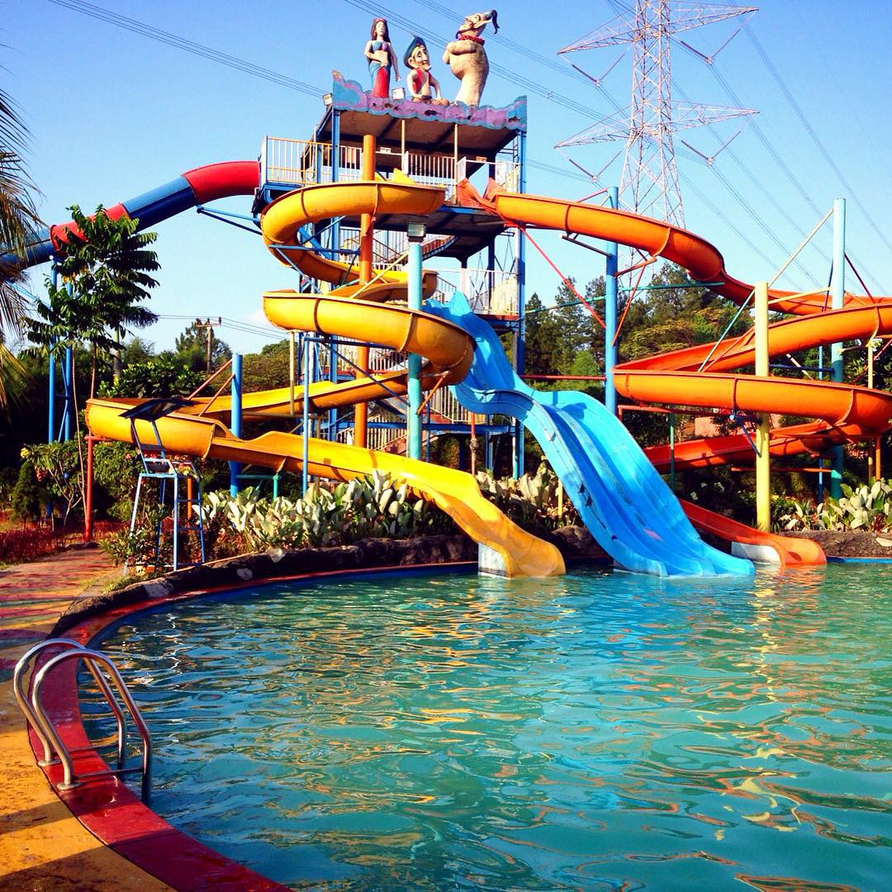
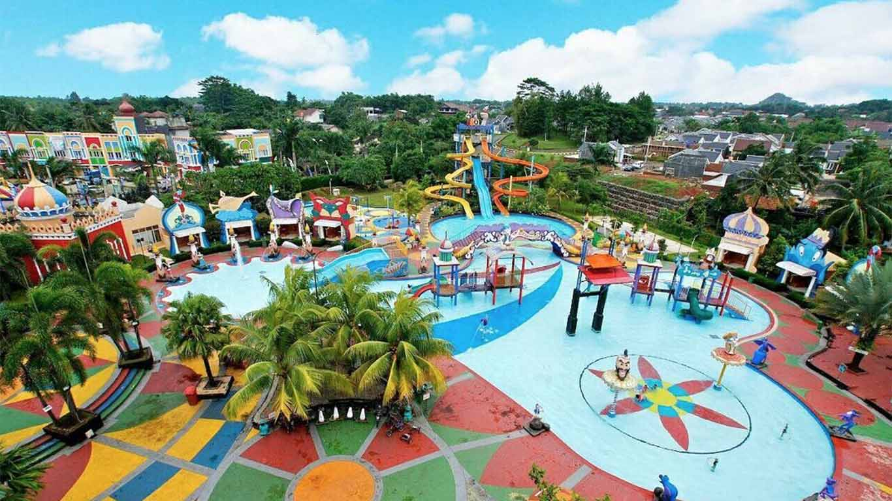
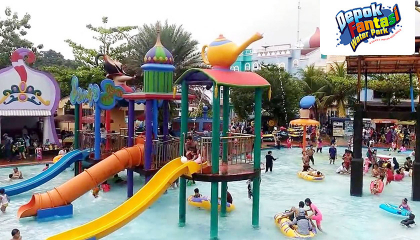
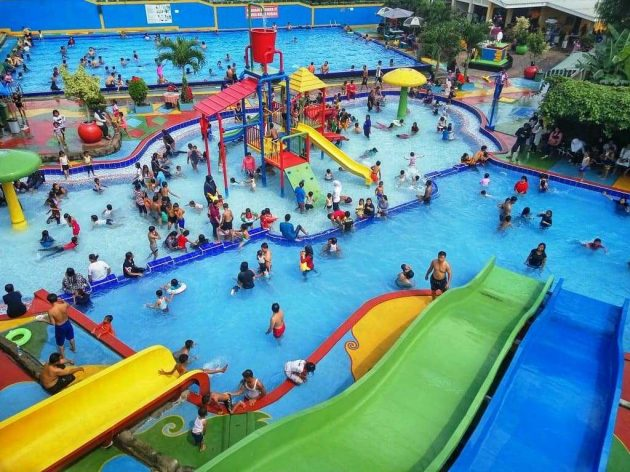
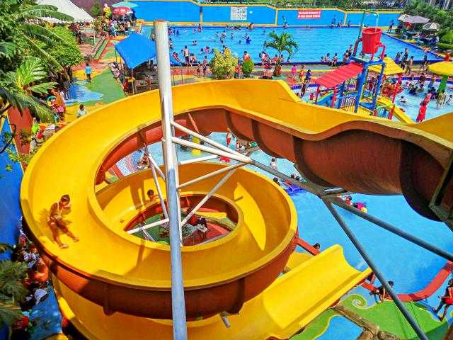
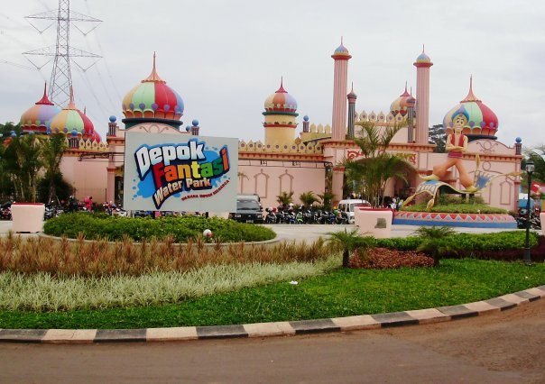

Detail Wisata Rekreasi Kota Depok
Gallery Foto






DEPOK FANTASI WATERPARK - ALADIN✩ ✩ ✩ ✩
Taman bermain air luas ini bertema Arab dan memiliki beragam seluncur, kolam renang & penyewaan pelampung.
Alamat: Jl. Boulevard Grand Depok City, Tirtajaya, Kec. Sukmajaya, Kota Depok, Jawa Barat 16412. Letaknya
yang berada di tengah Kota Depok membuat tempat wisata ini mudah dijangkau dengan kendaraan pribadi, baik
motor ataupun mobil. Mulailah perjalananmu dari pusat kota, yakni Taman Rangkepan Jaya. epok Fantasy Waterpark
lebih dikenal dengan nama Aladin Waterpark. Sebab, taman rekreasi terbesar pertama di Depok ini memiliki tema unik,
yakni negeri 1001 malam dengan banyak replika Aladin dan Putri Jasmine.
Alamat Dan Peta Lokasi
Jl. Boulevard Grand Depok City, Tirtajaya, Kec. Sukmajaya, Kota Depok, Jawa Barat 16412.
Testimony Dan Komentar


Nike Ardila
Tempatnya sejuk dan rapih, next time kesini lagi bareng keluarga.
Cinta Kuya
Pernah kesini bareng keluarga. Tempatnya asyik.
Jefri Nichol
Tempat ini sangat menyenangkan, apalagi kolam renangnya sangat luas.